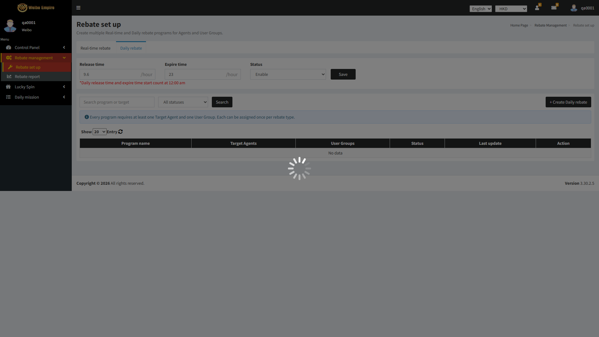
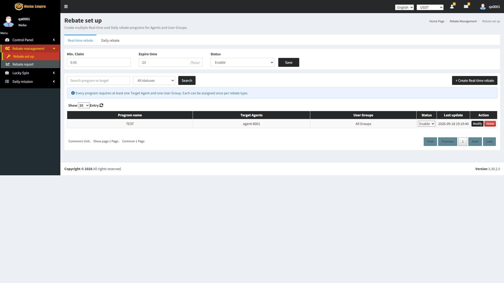
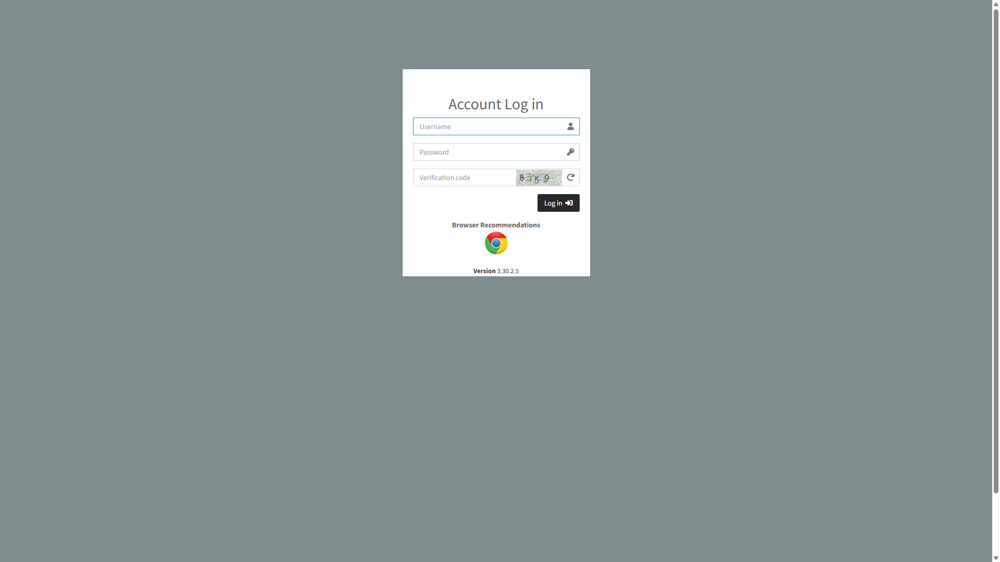

RBMP-115
Details superAdminHasFullAccessSuper Admin has full access to Rebate program management
The application behaved as expected.23 events recorded, ended on https://admin-test.1083.city/rebate/set-up/
Pass 1.90s
— 
The case
Case id RBMP-115
Method RebateAccessControlTest#superAdminHasFullAccess
Expected result Super Admin has full access to Rebate program management
Tags none
Outcome Pass in 1.90s
The result
Verdict Every assertion in the case held.
Verified Super Admin has full access to Rebate program management
Duration 1.90 seconds
The steps below are the run's own record of how the case reached that verdict, and the Evidence column shows the page it finished on.
What the run did (23 recorded events)
0.00s STEP Case started: RBMP-115: Super Admin has full access to Rebate program management 0.20s API GET rebate/set-up -> 301 0.26s API GET http://admin-test.1083.city/rebate/set-up/ -> 301 0.36s API GET rebate/set-up/ -> 200 0.38s API GET https://static.cloudflareinsights.com/beacon.min.js/v31edd6df95cf4e85bb4c19e7a9bdbcba1788362987495 -> 200 0.44s API GET https://fonts.googleapis.com/css?family=Source+Sans+Pro:300,400,600,700,300italic,400italic,600italic -> 200 0.59s NAV Loaded rebate/set-up/ 0.66s API POST cdn-cgi/rum? -> 204 0.75s API GET api/account/user-profile -> 200 0.81s API POST cdn-cgi/rum? -> 204 0.81s API POST cdn-cgi/rum? -> 204 0.82s API POST cdn-cgi/rum? -> 204 0.82s API POST cdn-cgi/rum? -> 204 0.94s API GET api/app-info?currency=HKD -> 200 1.01s API GET api/account/allow-menu?currency=HKD -> 200 1.10s API GET api/account/rebates?type=2&paginate=1¤cy=HKD -> 200 1.11s API GET api/account/phone-countries?currency=HKD -> 200 1.28s API GET api/account/rebate-programs?type=2&paginate=20&page=1¤cy=HKD -> 200 1.71s API GET api/account/rebates?type=1&paginate=1¤cy=HKD -> 200 1.73s DATA Account under test = qa0001 1.73s CHECK Every Rebate management action is available to this account. The back office does not display a role name, so the row is answered for the account rather than for the word "Super Admin". 1.73s STEP Case ended on https://admin-test.1083.city/rebate/set-up/ 1.85s EVIDENCE Captured the closing screenshot.
RBMP-116
Details adminRoleAccessLevelAdmin role's access level to Rebate program management
The application behaved as expected.66 events recorded, ended on https://admin-test.1083.city/rebate/set-up/
Pass 8.03s
— 
The case
Case id RBMP-116
Method RebateAccessControlTest#adminRoleAccessLevel
Expected result Admin role's access level to Rebate program management
Tags none
Outcome Pass in 8.03s
The result
Verdict Every assertion in the case held.
Verified Admin role's access level to Rebate program management
Duration 8.03 seconds
The steps below are the run's own record of how the case reached that verdict, and the Evidence column shows the page it finished on.
What the run did (66 recorded events)
0.00s STEP Case started: RBMP-116: Admin role's access level to Rebate program management 0.08s API GET api/account/rebate-programs?type=1&paginate=20&page=1¤cy=HKD -> 200 0.24s NAV Tab opened: about:blank 0.24s STEP Signing in to the back office at https://admin-test.1083.city/ 0.50s API GET login -> 301 0.64s API GET http://admin-test.1083.city/login/ -> 301 0.75s API GET login/ -> 200 0.96s API GET https://static.cloudflareinsights.com/beacon.min.js/v31edd6df95cf4e85bb4c19e7a9bdbcba1788362987495 -> 200 1.27s API GET https://fonts.googleapis.com/css?family=Source+Sans+Pro:300,400,600,700,300italic,400italic,600italic -> 200 1.58s API POST cdn-cgi/rum? -> 204 1.58s API POST cdn-cgi/rum? -> 204 1.58s API POST cdn-cgi/rum? -> 204 1.59s API POST cdn-cgi/rum? -> 204 1.66s NAV Loaded login/ 1.73s API POST cdn-cgi/rum? -> 204 2.16s API GET api/captcha?currency= -> 200 2.53s DATA Account = qa0001 2.56s STEP Submitting the back office sign-in form. 2.96s API POST api/account/login -> 200 3.14s API GET api/account/user-profile -> 200 3.20s API POST cdn-cgi/rum? -> 204 3.20s API POST cdn-cgi/rum? -> 204 3.30s API GET api/account/allow-menu?currency= -> 200 3.39s API GET api/account/check-work-status?op=login -> 200 3.42s CHECK Signed in: the header names qa0001. 3.48s API GET api/app-info?currency= -> 200 3.50s API GET api/account/allow-menu?currency= -> 200 3.57s API GET api/captcha?currency= -> 200 3.70s API GET api/account/home/index?blockType=todayDeposit¤cy=USDT -> 200 3.71s API GET api/account/user-profile?currency=USDT -> 200 3.71s API GET api/account/home/index?blockType=memberTotal¤cy=USDT -> 200 3.72s API GET api/account/phone-countries?currency= -> 200 3.81s API GET api/account/home/index?blockType=todayAdjustInValue¤cy=USDT -> 200 3.85s API GET api/account/home/index?blockType=systemQuota¤cy=USDT -> 200 3.87s API GET api/account/home/index?blockType=todayRegisterUser¤cy=USDT -> 200 3.89s API GET api/account/home/index?blockType=todayWithdraw¤cy=USDT -> 200 3.90s API GET api/account/home/index?blockType=todayActiveTotal¤cy=USDT -> 200 3.93s API GET api/account/home/index?blockType=loginUser¤cy=USDT -> 200 3.95s API GET api/account/home/index?blockType=todayAdjustOutValue¤cy=USDT -> 200 3.96s API GET api/account/home/win_lose_report_chart?currency=USDT -> 200 4.00s API GET api/account/home/transaction_report_chart?currency=USDT -> 200 4.14s API GET api/account/system_info?currency=HKD -> 200 6.43s DATA Role under test = Admin (qa0001) 6.55s API GET rebate/set-up -> 301 6.61s API GET http://admin-test.1083.city/rebate/set-up/ -> 301 6.71s API GET rebate/set-up/ -> 200 6.74s API GET https://static.cloudflareinsights.com/beacon.min.js/v31edd6df95cf4e85bb4c19e7a9bdbcba1788362987495 -> 200 6.80s API GET https://fonts.googleapis.com/css?family=Source+Sans+Pro:300,400,600,700,300italic,400italic,600italic -> 200 6.99s NAV Loaded rebate/set-up/ 7.05s API POST cdn-cgi/rum? -> 204 7.17s API GET api/account/user-profile -> 200 7.23s API POST cdn-cgi/rum? -> 204 7.23s API POST cdn-cgi/rum? -> 204 7.23s API POST cdn-cgi/rum? -> 204 7.23s API POST cdn-cgi/rum? -> 204 7.35s API GET api/app-info?currency=USDT -> 200 7.42s API GET api/account/allow-menu?currency=USDT -> 200 7.50s API GET api/account/rebates?type=2&paginate=1¤cy=USDT -> 200 7.51s API GET api/account/phone-countries?currency=USDT -> 200 7.66s API GET api/account/rebate-programs?type=2&paginate=20&page=1¤cy=USDT -> 200 7.87s DATA Create available to Admin = true 7.88s DATA Search available to Admin = true 7.88s DATA Status filter available to Admin = true 7.88s EVIDENCE AQ-10 is unanswered: this row records the Admin role's actual access level above. Turn it into an assertion once the client says whether Admin is at parity with Super Admin or holds a restricted subset. 7.88s STEP Case ended on https://admin-test.1083.city/rebate/set-up/ 7.99s EVIDENCE Captured the closing screenshot.
RBMP-117
Details agentRoleCannotAccessAdminSetupAgent role cannot access Rebate program admin setup
The application behaved as expected.52 events recorded, ended on https://admin-test.1083.city/rebate/set-up/
Pass 6.69s
—
The case
Case id RBMP-117
Method RebateAccessControlTest#agentRoleCannotAccessAdminSetup
Expected result Agent role cannot access Rebate program admin setup
Tags none
Outcome Pass in 6.69s
The result
Verdict Every assertion in the case held.
Verified Agent role cannot access Rebate program admin setup
Duration 6.69 seconds
The steps below are the run's own record of how the case reached that verdict, and the Evidence column shows the page it finished on.
What the run did (52 recorded events)
0.00s STEP Case started: RBMP-117: Agent role cannot access Rebate program admin setup 0.18s NAV Tab opened: about:blank 0.18s STEP Signing in to the back office at https://admin-test.1083.city/ 0.54s API GET login -> 301 0.68s API GET http://admin-test.1083.city/login/ -> 301 0.78s API GET login/ -> 200 0.99s API GET https://static.cloudflareinsights.com/beacon.min.js/v31edd6df95cf4e85bb4c19e7a9bdbcba1788362987495 -> 200 1.31s API GET https://fonts.googleapis.com/css?family=Source+Sans+Pro:300,400,600,700,300italic,400italic,600italic -> 200 1.58s API POST cdn-cgi/rum? -> 204 1.58s API POST cdn-cgi/rum? -> 204 1.59s API POST cdn-cgi/rum? -> 204 1.59s API POST cdn-cgi/rum? -> 204 1.77s NAV Loaded login/ 1.78s API POST cdn-cgi/rum? -> 204 1.94s API GET api/captcha?currency= -> 200 2.01s DATA Account = qatest 2.05s STEP Submitting the back office sign-in form. 2.49s API POST api/account/login -> 200 2.75s API GET api/account/user-profile -> 200 2.80s API POST cdn-cgi/rum? -> 204 2.80s API POST cdn-cgi/rum? -> 204 2.90s API GET api/account/allow-menu?currency= -> 200 2.91s CHECK Signed in: the header names qatest. 3.02s API GET api/account/check-work-status?op=login -> 200 3.09s API GET api/app-info?currency= -> 200 3.10s API GET api/account/allow-menu?currency= -> 200 3.27s API GET api/account/user-profile?currency=USDT -> 200 3.29s API GET api/account/phone-countries?currency= -> 200 3.29s API GET api/account/home/index?blockType=memberTotal¤cy=USDT -> 200 3.47s API GET api/account/home/index?blockType=todayRegisterUser¤cy=USDT -> 200 3.51s API GET api/account/home/transaction_report_chart?currency=USDT -> 200 3.52s API GET api/account/home/index?blockType=todayAdjustInValue¤cy=USDT -> 200 3.53s API GET api/account/home/index?blockType=todayWithdraw¤cy=USDT -> 200 3.54s API GET api/account/home/win_lose_report_chart?currency=USDT -> 200 3.55s API GET api/account/home/index?blockType=todayAdjustOutValue¤cy=USDT -> 200 3.56s API GET api/account/home/index?blockType=todayActiveTotal¤cy=USDT -> 200 3.56s API GET api/account/home/index?blockType=todayDeposit¤cy=USDT -> 200 3.57s API GET api/account/home/index?blockType=loginUser¤cy=USDT -> 200 3.57s API GET api/account/home/index?blockType=systemQuota¤cy=USDT -> 200 3.62s API GET api/captcha?currency= -> 200 5.91s DATA Role under test = Agent (qatest) 5.92s CHECK Rebate set up in the menu for Agent: false 6.05s API GET rebate/set-up -> 301 6.16s API GET http://admin-test.1083.city/rebate/set-up/ -> 301 6.29s API GET rebate/set-up/ -> 200 6.30s API GET https://static.cloudflareinsights.com/beacon.min.js/v31edd6df95cf4e85bb4c19e7a9bdbcba1788362987495 -> 200 6.37s API GET https://fonts.googleapis.com/css?family=Source+Sans+Pro:300,400,600,700,300italic,400italic,600italic -> 200 6.57s NAV Loaded rebate/set-up/ 6.58s DATA Direct navigation landed on = https://admin-test.1083.city/rebate/set-up/ 6.58s STEP Case ended on https://admin-test.1083.city/rebate/set-up/ 6.67s API POST cdn-cgi/rum? -> 204 6.67s EVIDENCE Captured the closing screenshot.
RBMP-118
Details ordinaryUserCannotAccessAdminSetupOrdinary user cannot access Rebate program admin setup
The application behaved as expected.52 events recorded, ended on https://admin-test.1083.city/rebate/set-up/
Pass 6.96s
—
The case
Case id RBMP-118
Method RebateAccessControlTest#ordinaryUserCannotAccessAdminSetup
Expected result Ordinary user cannot access Rebate program admin setup
Tags none
Outcome Pass in 6.96s
The result
Verdict Every assertion in the case held.
Verified Ordinary user cannot access Rebate program admin setup
Duration 6.96 seconds
The steps below are the run's own record of how the case reached that verdict, and the Evidence column shows the page it finished on.
What the run did (52 recorded events)
0.00s STEP Case started: RBMP-118: Ordinary user cannot access Rebate program admin setup 0.16s NAV Tab opened: about:blank 0.16s STEP Signing in to the back office at https://admin-test.1083.city/ 0.39s API GET login -> 301 0.56s API GET http://admin-test.1083.city/login/ -> 301 0.67s API GET login/ -> 200 0.90s API GET https://static.cloudflareinsights.com/beacon.min.js/v31edd6df95cf4e85bb4c19e7a9bdbcba1788362987495 -> 200 1.24s API GET https://fonts.googleapis.com/css?family=Source+Sans+Pro:300,400,600,700,300italic,400italic,600italic -> 200 1.53s API POST cdn-cgi/rum? -> 204 1.53s API POST cdn-cgi/rum? -> 204 1.53s API POST cdn-cgi/rum? -> 204 1.53s API POST cdn-cgi/rum? -> 204 1.75s NAV Loaded login/ 1.76s API POST cdn-cgi/rum? -> 204 1.78s API GET api/captcha?currency= -> 200 1.82s DATA Account = qatest 1.86s STEP Submitting the back office sign-in form. 2.25s API POST api/account/login -> 200 2.43s API GET api/account/user-profile -> 200 2.49s API POST cdn-cgi/rum? -> 204 2.49s API POST cdn-cgi/rum? -> 204 2.62s API GET api/account/allow-menu?currency= -> 200 2.62s API GET api/account/check-work-status?op=login -> 200 2.68s API GET api/app-info?currency= -> 200 2.75s CHECK Signed in: the header names qatest. 2.91s API GET api/account/home/win_lose_report_chart?currency=USDT -> 200 2.91s API GET api/account/user-profile?currency=USDT -> 200 2.92s API GET api/account/phone-countries?currency= -> 200 3.09s API GET api/account/home/index?blockType=systemQuota¤cy=USDT -> 200 3.10s API GET api/account/home/index?blockType=todayActiveTotal¤cy=USDT -> 200 3.10s API GET api/account/allow-menu?currency=USDT -> 200 3.18s API GET api/account/home/index?blockType=loginUser¤cy=USDT -> 200 3.18s API GET api/account/home/index?blockType=memberTotal¤cy=USDT -> 200 3.19s API GET api/account/home/transaction_report_chart?currency=USDT -> 200 3.20s API GET api/account/home/index?blockType=todayAdjustOutValue¤cy=USDT -> 200 3.20s API GET api/captcha?currency= -> 200 3.25s API GET api/account/home/index?blockType=todayDeposit¤cy=USDT -> 200 3.25s API GET api/account/home/index?blockType=todayRegisterUser¤cy=USDT -> 200 3.25s API GET api/account/home/index?blockType=todayWithdraw¤cy=USDT -> 200 3.26s API GET api/account/home/index?blockType=todayAdjustInValue¤cy=USDT -> 200 5.77s DATA Role under test = ordinary user (qatest) 5.92s CHECK Rebate set up in the menu for ordinary user: false 6.05s API GET rebate/set-up -> 301 6.14s API GET http://admin-test.1083.city/rebate/set-up/ -> 301 6.26s API GET rebate/set-up/ -> 200 6.29s API GET https://static.cloudflareinsights.com/beacon.min.js/v31edd6df95cf4e85bb4c19e7a9bdbcba1788362987495 -> 200 6.40s API GET https://fonts.googleapis.com/css?family=Source+Sans+Pro:300,400,600,700,300italic,400italic,600italic -> 200 6.78s NAV Loaded rebate/set-up/ 6.81s DATA Direct navigation landed on = https://admin-test.1083.city/rebate/set-up/ 6.81s STEP Case ended on https://admin-test.1083.city/rebate/set-up/ 6.92s API POST cdn-cgi/rum? -> 204 6.92s EVIDENCE Captured the closing screenshot.
RBMP-119
Details deepLinkWithoutTheProperRoleDirect deep-link to Create/Modify URLs without the proper role
The application behaved as expected.70 events recorded, ended on https://admin-test.1083.city/login
Pass 9.01s
— 
The case
Case id RBMP-119
Method RebateAccessControlTest#deepLinkWithoutTheProperRole
Expected result Direct deep-link to Create/Modify URLs without the proper role
Tags none
Outcome Pass in 9.01s
The result
Verdict Every assertion in the case held.
Verified Direct deep-link to Create/Modify URLs without the proper role
Duration 9.01 seconds
The steps below are the run's own record of how the case reached that verdict, and the Evidence column shows the page it finished on.
What the run did (70 recorded events)
0.00s STEP Case started: RBMP-119: Direct deep-link to Create/Modify URLs without the proper role 0.29s NAV Tab opened: about:blank 0.66s API GET rebate/set-up -> 301 0.81s API GET http://admin-test.1083.city/rebate/set-up/ -> 301 0.92s API GET rebate/set-up/ -> 200 1.15s API GET https://static.cloudflareinsights.com/beacon.min.js/v31edd6df95cf4e85bb4c19e7a9bdbcba1788362987495 -> 200 1.45s API GET https://fonts.googleapis.com/css?family=Source+Sans+Pro:300,400,600,700,300italic,400italic,600italic -> 200 1.77s API POST cdn-cgi/rum? -> 204 1.77s API POST cdn-cgi/rum? -> 204 1.78s API POST cdn-cgi/rum? -> 204 1.78s API POST cdn-cgi/rum? -> 204 1.86s API POST cdn-cgi/rum? -> 204 1.86s API POST cdn-cgi/rum? -> 204 2.03s NAV Loaded login 2.03s DATA Signed-out deep link landed on = https://admin-test.1083.city/login 2.07s EVIDENCE The row asks for the Create/Modify screen's own URL. There is not one: measured 2026-09-18, Create and Modify are rendered in place and the address stays /rebate/set-up/ throughout, so /rebate/set-up is the whole of what can be deep-linked. 2.20s API POST cdn-cgi/rum? -> 204 2.22s API GET api/captcha?currency= -> 200 2.27s NAV Tab opened: about:blank 2.27s STEP Signing in to the back office at https://admin-test.1083.city/ 2.53s API GET login -> 301 2.68s API GET http://admin-test.1083.city/login/ -> 301 2.79s API GET login/ -> 200 3.02s API GET https://static.cloudflareinsights.com/beacon.min.js/v31edd6df95cf4e85bb4c19e7a9bdbcba1788362987495 -> 200 3.33s API GET https://fonts.googleapis.com/css?family=Source+Sans+Pro:300,400,600,700,300italic,400italic,600italic -> 200 3.65s API POST cdn-cgi/rum? -> 204 3.66s API POST cdn-cgi/rum? -> 204 3.66s API POST cdn-cgi/rum? -> 204 3.66s API POST cdn-cgi/rum? -> 204 3.75s NAV Loaded login/ 3.82s API POST cdn-cgi/rum? -> 204 3.91s API GET api/captcha?currency= -> 200 3.99s DATA Account = qatest 4.03s STEP Submitting the back office sign-in form. 4.41s API POST api/account/login -> 200 4.59s API GET api/account/user-profile -> 200 4.66s API POST cdn-cgi/rum? -> 204 4.66s API POST cdn-cgi/rum? -> 204 4.95s API GET api/app-info?currency= -> 200 4.98s CHECK Signed in: the header names qatest. 4.99s API GET api/account/check-work-status?op=login -> 200 4.99s API GET api/account/allow-menu?currency= -> 200 4.99s API GET api/captcha?currency= -> 200 5.06s API GET api/account/allow-menu?currency= -> 200 5.13s API GET api/account/home/win_lose_report_chart?currency=USDT -> 200 5.15s API GET api/account/user-profile?currency=USDT -> 200 5.15s API GET api/account/phone-countries?currency= -> 200 5.34s API GET api/account/home/index?blockType=memberTotal¤cy=USDT -> 200 5.38s API GET api/account/home/index?blockType=todayActiveTotal¤cy=USDT -> 200 5.38s API GET api/account/home/index?blockType=systemQuota¤cy=USDT -> 200 5.39s API GET api/account/home/transaction_report_chart?currency=USDT -> 200 5.40s API GET api/account/home/index?blockType=todayAdjustInValue¤cy=USDT -> 200 5.41s API GET api/account/home/index?blockType=todayAdjustOutValue¤cy=USDT -> 200 5.42s API GET api/account/home/index?blockType=loginUser¤cy=USDT -> 200 5.43s API GET api/account/home/index?blockType=todayWithdraw¤cy=USDT -> 200 5.43s API GET api/account/home/index?blockType=todayRegisterUser¤cy=USDT -> 200 5.44s API GET api/account/home/index?blockType=todayDeposit¤cy=USDT -> 200 7.98s DATA Role under test = Agent (qatest) 7.99s CHECK Rebate set up in the menu for Agent (deep link): false 8.10s API GET rebate/set-up -> 301 8.17s API GET http://admin-test.1083.city/rebate/set-up/ -> 301 8.27s API GET rebate/set-up/ -> 200 8.28s API GET https://static.cloudflareinsights.com/beacon.min.js/v31edd6df95cf4e85bb4c19e7a9bdbcba1788362987495 -> 200 8.36s API GET https://fonts.googleapis.com/css?family=Source+Sans+Pro:300,400,600,700,300italic,400italic,600italic -> 200 8.71s NAV Loaded rebate/set-up/ 8.73s DATA Direct navigation landed on = https://admin-test.1083.city/rebate/set-up/ 8.73s STEP Case ended on https://admin-test.1083.city/login 8.89s API POST cdn-cgi/rum? -> 204 8.90s API GET api/account/user-profile -> 200 8.92s EVIDENCE Captured the closing screenshot.